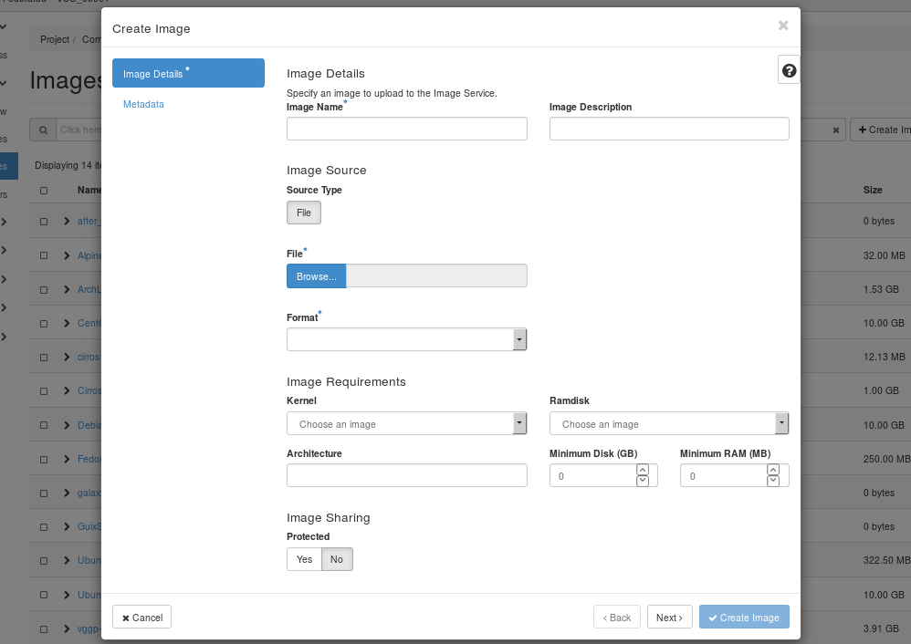

Upload and manage images#
A virtual machine image, referred to in this document simply as an image, is a single file that contains a virtual disk that has a bootable operating system installed on it. Images are used to create virtual machine instances within the cloud. The image files themselves are never modified, but you can copy the image into a persistent instance (see launch instance)
As a user of the VSC cloud, you can upload and manage your own virtual machine images. For information about creating image files, see the OpenStack Virtual Machine Image Guide.
Note
Shared storage in the VSC cloud is connected to a separate network, which is only accessible from within the OpenStack environment. Therefore, if you want to access your VM from outside of OpenStack, and use the shared storage at the same time, you must make sure your VM image is configured use multiple network interface cards (NICs).
You can choose who can access an image you have created. The following access policies for images exist:
public
Public images are provided by the VSC, and can be accessed by all users.
private
If you create a private image, only members of the same project have access.
shared
You can also choose to share your image with a list of other projects.
community
Community images are user-created images which are freely accessible to all other users.
Tip
You can also use the openstack and glance command-line clients or the Image service to manage images.
Upload an image#
Follow this procedure to upload an image to a project:
-
Open the Compute tab and click Images category.
-
Click Create Image.
The Create An Image dialog box appears.

-
Enter the following values:
-
Image Name: Enter a name for the image.
-
Image Description: Enter a brief description of the image.
-
Image Source
- File: Browse for the image file on your file system and add it.
- Format: Select the image format (for example, QCOW2) for the image.
-
Image Requirements
- Architecture: Specify the architecture. For example, for a 32-bit architecture or for a 64-bit architecture.
- Kernel, Ramdisk: Can be left empty, as this is determined by the image file.
- Minimum Disk (GB), Minimum RAM (MB): Choose suitable values, according to the requirements of your image's operating system.
-
- Protected
- If set to Yes, users need to unlock the image before they are able to delete it.
-
- Metadata
- You can add resource metadata in this tab. The glance Metadata Catalog provides a list of metadata image definitions.
-
-
Click Create Image. The image is queued to be uploaded. It might take some time before the status changes from Queued to Active.
Update an image#
Follow this procedure to update an existing image.
-
Open the project tab and click the Images category.
-
Select the image that you want to edit.
-
In the Actions column, open the drop-down menu and select Edit Image.
-
In the Edit Image dialog box, you can perform various actions. For example:
-
Change the name of the image.
-
Change the description of the image.
-
Change the format of the image.
-
Change the minimum disk of the image.
-
Change the minimum RAM of the image.
-
Change the protected status of the image.
-
Change the metadata of the image.
-
-
Click Edit Image.